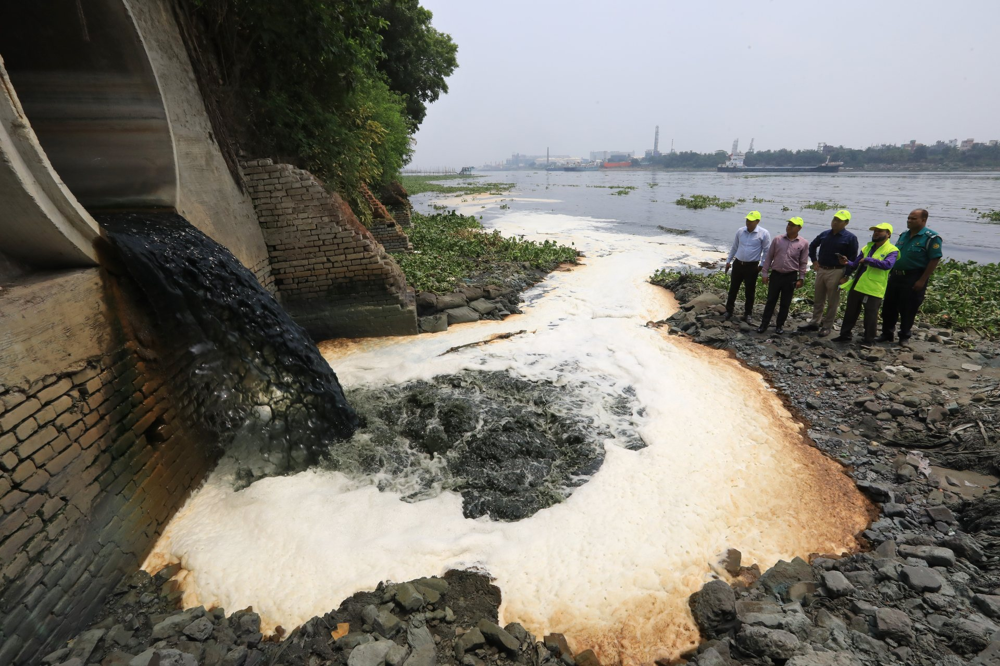

The use of single-use plastic started in Bangladesh in the 1980s. In about half a century, the Buriganga, Dhaka’s lifeline, has become choked with plastic waste.
The country generates around 3,000 tonnes of plastic waste every day, according to a 2022 study by the Environment and Social Development Organisation (ESDO). Experts say production has since increased significantly.
Much of this waste ends up in the country’s river system, clogging waterways, endangering aquatic life and posing a public health risk through microplastics in food.
We found plastic waste even 15 feet under the ground in the Buriganga. We checked some of the labels and found that they were dumped 15 to 17 years ago. But still they look new.
Polyethylene terephthalate (PET), the polymer used in bottles and food packaging, takes an estimated 450 years to break down, leaching microplastics and chemicals into the environment and contaminating food.
A PET bottle thrown away today could take until 2476 to break down.
The estimated breakdown time is longer than the 416 years since the Mughal fleet anchored at Chandni Ghat.
A 2025 study titled Health risk assessment of microplastics contamination in the daily diet of South Asian countries found microplastics were significantly more common in fish caught from the Buriganga than in fish from the Bay of Bengal.
Experts say unregulated manufacturing of single-use plastic, inadequate recycling systems, a lack of public awareness and weak enforcement of existing laws have brought the country’s rivers to this point.
Mismanagement of plastic waste has ultimately brought microplastics into our food items. Now we find microplastics in fish, salt, oil, and sugar. We consume microplastic in some way or another every day.
A growing tide of plastic
The plastic industry is booming. It employs about 1.5 million people, with over 6,000 manufacturing units operating in Bangladesh, according to the government’s Invest Bangladesh website. The data puts the industry’s estimated growth rate at 20 percent.
A World Bank report put Bangladesh’s annual plastic waste at close to 977,000 tonnes in 2020. In Dhaka, the daily total rose from 178 tonnes in 2005 to roughly 646 tonnes in 2020.
More plastic, every day.
Dhaka generated 646 tonnes of plastic waste a day in 2020, up from 178 tonnes in 2005.
3.6×as much daily waste in 15 years
Source: World Bank, June 2021. Published figures: 178 tonnes a day in 2005 and 646 in 2020.
Read the chart data
| Year | Tonnes per day | Basis |
|---|---|---|
| 2005 | 178 | Published World Bank figure |
| 2020 | 646 | Published World Bank figure |
Polythene shopping bags are a daily part of that accumulation. According to the 2022 ESDO study, close to 1.4 million bags are discarded after a single use in Dhaka each day. An average family in the city uses five a day.
Since you opened this story, Dhaka has thrown awayEvery day, Dhaka throws away about
01.4 million polythene bags
The count keeps climbing while you read, by about 16 bags every second.
- 1.4 million
- bags discarded after a single use in Dhaka every day
- 5
- bags a day used by an average family in the city
- 2002
- the year Bangladesh banned polythene shopping bags, the first country to do so
Source: ESDO study, 2022.
The BNP government banned poly bags in 2002. But successive governments did not take action to regulate poly bags. Now we are collecting information as part of preparation to conduct mobile courts against illegal factories.
The people recovering what they can
Only 37 percent of Dhaka’s plastic waste was recycled, according to World Bank figures for 2020. Almost all of that work was carried out by the informal sector, clustered in places such as Islambagh in Old Dhaka.
Most plastic never reaches recycling.
Dhaka, 2020. Of every 100 parts of plastic waste, just 37 were recycled, almost entirely by the informal sector.
Each square = 1% of Dhaka’s plastic waste
37%recycled
A recovery system sustained almost entirely by informal workers.
- 37% recycled
- 63% not recycled
“Not recycled” does not mean all of this waste was dumped in rivers.
Source: World Bank, June 2021.
On a recent visit to Islambagh, The Daily Star spoke to Shamsul Alam, a trader who runs a plastic scrap shop supplying recycling factories.
Plastic waste from different parts of the city reaches Islambagh, he said. Workers sort it and make plastic chips, which are sold to factories to be turned into plastic products.

From the river to our food
Bangladesh has 1,415 rivers, covering nearly 24,140 kilometres, according to Bangladesh Water Development Board figures cited in the report. Many, particularly those around Dhaka, are becoming increasingly polluted by indiscriminate dumping of plastic waste, experts say.
The consequences play out every monsoon. About half an hour of moderate to heavy rain can submerge roads across the capital. Between 2020 and 2024, Dhaka’s two city corporations spent more than Tk 1,000 crore trying to unclog and rehabilitate the drainage network.
Officials say that within days of a cleaning drive, the same drains choke again, mostly with polythene, food wrappers and packaging.
Researchers have also found increasing plastic contamination in the Sundarbans, a UNESCO World Heritage site, alongside growing tourism. Nearly 250,000 tourists visit the mangrove forest annually.
A 2023 study of the Buriganga found microplastics, particles smaller than 5 millimetres, in fish, crabs and river sediment. It also detected high loads of toxic heavy metals, including chromium, lead, arsenic and cadmium.
Plastic too small to see.
Buriganga, 2023. Microplastics measured in fish, crabs and river sediment, as reported concentrations in particles per gram.
Connected marks show the reported range.
The sediment mark shows a maximum only.
Source: Buriganga study, Science of the Total Environment, January 2023.
Plastic is an emerging pollutant and no safe limit for plastic has been fixed yet.
Scientists are still studying the health impacts of microplastic consumption and exposure. A 2025 Stanford Medicine article describes suspected links to reproductive, digestive and respiratory harm. Children could be particularly vulnerable.
A ban without enforcement
In 2002, Bangladesh became the first country in the world to ban polythene shopping bags. Since then, court decisions have prohibited dumping plastic along riverbanks and in rivers, banned plastic posters in election campaigns, and ordered plastic to be cleared from major rivers.
In September 2026, the High Court directed authorities to remove all plastic and other waste dumped along the Buriganga banks in Islambagh, Lalbagh and Kamrangirchar within 15 days. Yet the report found these directives had not translated into implementation.
The lack of a comprehensive and inclusive plan of action has encouraged corruption, while microplastics are now found everywhere.
Other environmental activists say that, despite having good laws, successive governments have failed to implement them.
Bangladesh’s National Action Plan for Sustainable Plastic Management, aligned with the 8th Five-Year Plan, set three major targets.
The promises on paper
Three targets in the National Action Plan. Each measures a different part of the plastic problem.
By 2025
50%
of plastic recycled
Raise recycling to half of the country’s plastic.
By 2026
90%
of targeted single-use plastics phased out
Phase out the specified single-use products.
By 2030
30%
less plastic waste generated
Reduce annual generation against the 2020-21 baseline.
Targets, not measured outcomes. Source: National Action Plan, via the World Bank, 2021.
Shaikh Faridul Islam, the state minister for the environment ministry, said the government would extend restrictions to more places.
The government will soon impose ban on using single use plastic in university campus and tourism sites.
Who should pay for the clean-up?
Companies should take responsibility for the pollution their products cause, says ESDO’s Shahriar Hossain.
The government needs to adopt a polluters’ pay principal, meaning whichever company’s product is polluting the river, that company must take the liability of cleaning the river.
Given plastic’s extensive use, eliminating all of it would be unrealistic, he said. Single-use products are a different matter.
But it is possible to eliminate single-use plastic. The government has made a list of such items. Of the 17 items, nine have already been banned. What is needed is proper implementation.
Single-use PET bottles start leaching microplastics from the time of manufacture and continue to do so for hundreds of years. Our children are growing up surrounded by this pollution.
While you were reading
0 polythene bags were thrown away in Dhaka in the time since you opened this story. At about 16 bags every second, Dhaka throws away close to 1.4 million polythene bags a day.
An estimate, from the ESDO study’s 1.4 million bags a day.
Sources and notes
- World Bank, 2021: Dhaka’s daily plastic waste in 2005 and 2020, and its recycling share.
- ESDO study, 2022.
- Science of the Total Environment, 2023: microplastics in Buriganga fish, crabs and sediment.
- Journal of Hazardous Materials Advances: microplastics in three wetland systems, including the Sundarbans.
- National Action Plan, World Bank, 2021: recycling, phaseout and reduction targets.
- Stanford Medicine, 2025: emerging evidence on suspected health effects.
The opening scenes of 1610, 1850 and 1980 are reconstructions, made to match the present-day photograph of the same bank.